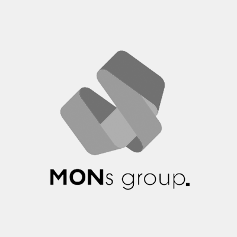

하봉안이 이룩한 성과들
요약
모바일/웹 제품 개발 및 운영에 대한 높은 이해
- 총 5개의 모바일/웹 애플리케이션 서비스를 기획, 개발, 디자인, 프로젝트 관리까지 모두 실행
- 프론트엔드 개발(HTML, CSS, Javascript) 및 Photoshop 등 그래픽 도구 사용을 통한 제품 설계 역량 보유
- '링커리어' 신규 유입 세션 개선 및 소스/매체 개선, 2개월 간 일일 세션 약 2,000 증가
신규 사업 개발 및 운영 역량
- 시스템이 정해져 있는 일을 하기보다 시스템을 만들어가는 일을 주로 해왔음. 서비스 기획 및 전략뿐 아니라 사업부 전략 및 신규 사업 개발, 운영 역량 보유.
- 지난 2012년 ‘몬스그룹’에 창업멤버로 합류해 ‘뉴스몬’과 ‘동네몬’을 기획, 운영하며 상용화.
- 2014년엔 ‘라우드웨어’를 창업, 사업과 서비스의 기획, 운영, 개발 등 비즈니스의 모든 분야를 직접 진행.
- 2016년부터 지금까지 웹사이트 '고파운더'를 운영하며, 서비스의 개발, 기획을 중점적으로 신규 프로젝트를 실행.
3회의 스타트업 운영 : 회복탄력성, 집요함, 문제정의와 구체화
- 2번의 스타트업 실패와 좌절에도 굴하지 않고 각종 어려움과 위기를 극복해내는 높은 회복탄력성.
- 문제를 정의하고, 이를 해결하기 위한 솔루션을 끝까지 찾아내는 집요함.
- 복잡한 문제를 가시적화하고 구체적인 목표들로 압축하여 프로세스를 간단화하고 구체화하는 능력.
만나서 반갑습니다!
저는 하봉안이라고 합니다. 서울 광진구에 살고 있으며 건국대학교 경영학과를 졸업하고 현재 '고파운더'라는 웹사이트를 운영하며 웹서비스를 만드는 재미에 빠져있습니다. 지난 2012년부터
3번의 스타트업과 그 외의 여러 경험을 통해 실로 IT와 기술 비즈니스에 대해 많은 애정을 쌓았습니다.
사업에 대한 깊은 열정으로 비즈니스 분야에 대한 것이라면 무엇이든 관심을 갖고 얘기를 하는 것을 좋아합니다. 약 3년의 기간동안 모바일/웹 서비스 기획과 운영, 개발, 마케팅 등 기술 비즈니스와 관련된 모든 분야에서 스타트업 문화와 방법론을 근간으로 일해왔습니다.
사업에 대한 깊은 열정으로 비즈니스 분야에 대한 것이라면 무엇이든 관심을 갖고 얘기를 하는 것을 좋아합니다. 약 3년의 기간동안 모바일/웹 서비스 기획과 운영, 개발, 마케팅 등 기술 비즈니스와 관련된 모든 분야에서 스타트업 문화와 방법론을 근간으로 일해왔습니다.
물론 그 깊이의 차이는 있지만, 서비스 기획부터 개발, 운영, 서비스 종료까지 과정에서 필요한 모든 일을 직접 배우고 실행하면서 나름의 시각을 정립했습니다. 팀을 직접 빌딩하고 이끌면서 비전을 제시하고, 팀원들의 의지를 고취하고 욕망을 일치시키는 일도 해왔습니다. 어설플지는 몰라도 오너십을 갖고 배워냈기 때문에 정성과 열정으로 배우고 고민했습니다.
모바일/웹 등 여러 인터넷 서비스의 다양한 포지션 수행 경험은 어떤 기술 비즈니스에 참여하더라도 큰 도움이 될 것이라고 자신합니다. 기업과 제품의 모든 요소는 유기적으로 이어져있고, 맞물려있기 때문입니다. 결국, 어떤 제품이건 그것의 본질은 사용자가 원하는 품질을 갖추고 또 그렇게 잘 알려지고 쓰여지는 것에 있기에
모바일/웹 등 여러 인터넷 서비스의 다양한 포지션 수행 경험은 어떤 기술 비즈니스에 참여하더라도 큰 도움이 될 것이라고 자신합니다. 기업과 제품의 모든 요소는 유기적으로 이어져있고, 맞물려있기 때문입니다. 결국, 어떤 제품이건 그것의 본질은 사용자가 원하는 품질을 갖추고 또 그렇게 잘 알려지고 쓰여지는 것에 있기에
나만의 프로세스
찾아보고, 회고하고, 반복하라.
제품의 목적과 사업의 목적을 정의하고 사용자가 궁극적으로 사이트에서 얻고자하는 것을 결정하는 것이 매우 중요합니다. 어떤 일이든 구체적인 '기대 효과’와 ‘목표’를 정의하고, 이를 통해 달성할 ‘성과’를 생각해야 합니다.
이러한 사실은 왜 제가 항상 제품에 대해, 사업에 대해 고민할 때 항상 '찾아보는 것'으로부터 시작하는지 말해줍니다. 사용자들이 제품에서 어떠한 목적을 달성할 수 있을지, 사업적으로는 사용자가 얻을 편익을 정의하고, 편익과 욕망이 일치하는지 확인하는 것으로 시작해야 합니다. 이것들은 반드시 FGI, 2차 자료 조사 등 구체적인 근거를 가지고 가설을 세우고, 실행에 옮겨야 합니다. '찾아보는 것'을 중시하는 이유는 근거 없는 생각을 극도로 꺼리기 때문입니다.
이 과정에서 회고는 필수적입니다. 머리 속에 올려져 있는 생각들을 모두 글로 풀어 적고, 고민을 구체화하는 과정입니다. 추상적인 생각들을 구체화시키고 간단한 문제로 압축하는 것, 해결해야 하는 문제를 단계별로 쪼개고 순차적으로 실행하는 것은 가장 중요합니다. 에버노트를 활용해 회고를 즐겨 합니다.
그리고 이 과정을 끈기 있게 반복하여 학습해내는 것, 그 결과를 토대로 새로운 목표를 생성하고 달성하는 것은 높은 회복탄력성과 지구력, 집요함을 길러줍니다. 어떤 업무를 하든 이러한 기본 아이디어에서 출발합니다. 이는 저만의 핵심역량입니다.
이러한 사실은 왜 제가 항상 제품에 대해, 사업에 대해 고민할 때 항상 '찾아보는 것'으로부터 시작하는지 말해줍니다. 사용자들이 제품에서 어떠한 목적을 달성할 수 있을지, 사업적으로는 사용자가 얻을 편익을 정의하고, 편익과 욕망이 일치하는지 확인하는 것으로 시작해야 합니다. 이것들은 반드시 FGI, 2차 자료 조사 등 구체적인 근거를 가지고 가설을 세우고, 실행에 옮겨야 합니다. '찾아보는 것'을 중시하는 이유는 근거 없는 생각을 극도로 꺼리기 때문입니다.
이 과정에서 회고는 필수적입니다. 머리 속에 올려져 있는 생각들을 모두 글로 풀어 적고, 고민을 구체화하는 과정입니다. 추상적인 생각들을 구체화시키고 간단한 문제로 압축하는 것, 해결해야 하는 문제를 단계별로 쪼개고 순차적으로 실행하는 것은 가장 중요합니다. 에버노트를 활용해 회고를 즐겨 합니다.
그리고 이 과정을 끈기 있게 반복하여 학습해내는 것, 그 결과를 토대로 새로운 목표를 생성하고 달성하는 것은 높은 회복탄력성과 지구력, 집요함을 길러줍니다. 어떤 업무를 하든 이러한 기본 아이디어에서 출발합니다. 이는 저만의 핵심역량입니다.

하봉안의 경험들
스타트업을 직접 설립하고 운영하면서 기술 비즈니스를 직접 실행해보는 행운을 얻었습니다. 이 과정에서 전략, 기획, 마케팅 등 여러 비즈니스 분야에 대한 지식을 쌓았고, 나름대로의 시각을 정립했습니다. 이러한 경험은 어떠한 인터넷 서비스에 참여하더라도 성장시킬 수 있는 자신감과 역량적 바탕을 형성하였습니다.

몬스그룹의 창업멤버

라우드웨어를 창업
라우드웨어창업자 겸 대표
2014년 06월 ~ 2015년 04월
2014년 06월 ~ 2015년 04월

링커리어를 운영
(주)스펙업애드 링커리어팀원
2012년 11월 ~ 2014년 1월
2012년 11월 ~ 2014년 1월
- 몬스그룹에서는 뉴미디어 서비스 '하루에 한 가지 뉴스, 뉴스몬'과 위치기반 SNS '우리 동네 SNS, 동네몬'을 기획/운영했습니다.
- 뉴스몬의 웹사이트 기획 및 콘텐츠 운영을 맡았으며, 동네몬은 서비스 초기 기획부터 PM 및 운영을 맡아 관리했습니다.
- 초기 스타트업에 창업멤버로 합류해 비즈니스에 대해 많은 고민과 경험을 할 수 있었습니다
- 뉴스몬의 웹사이트 기획 및 콘텐츠 운영을 맡았으며, 동네몬은 서비스 초기 기획부터 PM 및 운영을 맡아 관리했습니다.
- 초기 스타트업에 창업멤버로 합류해 비즈니스에 대해 많은 고민과 경험을 할 수 있었습니다

고파운더를 시작
고파운더팀리더
2012년 11월 ~ 2014년 1월
2012년 11월 ~ 2014년 1월
- 몬스그룹에서는 뉴미디어 서비스 '하루에 한 가지 뉴스, 뉴스몬'과 위치기반 SNS '우리 동네 SNS, 동네몬'을 기획/운영했습니다.
- 뉴스몬의 웹사이트 기획 및 콘텐츠 운영을 맡았으며, 동네몬은 서비스 초기 기획부터 PM 및 운영을 맡아 관리했습니다.
- 초기 스타트업에 창업멤버로 합류해 비즈니스에 대해 많은 고민과 경험을 할 수 있었습니다
- 뉴스몬의 웹사이트 기획 및 콘텐츠 운영을 맡았으며, 동네몬은 서비스 초기 기획부터 PM 및 운영을 맡아 관리했습니다.
- 초기 스타트업에 창업멤버로 합류해 비즈니스에 대해 많은 고민과 경험을 할 수 있었습니다